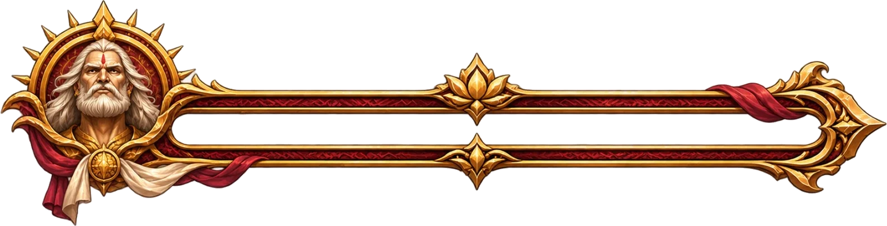
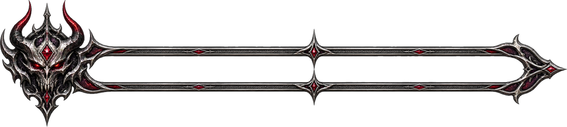

Rakti is best fought in landscape.
Respawning at the last checkpoint

PITAJI · POSSESSED
THE SANDS FLOW FORWARD
The echoes of the temple bend to your blade.
Tap Share at the bottom of Safari, then Add to Home Screen.
Rakti then opens full screen from its own icon, like an app.